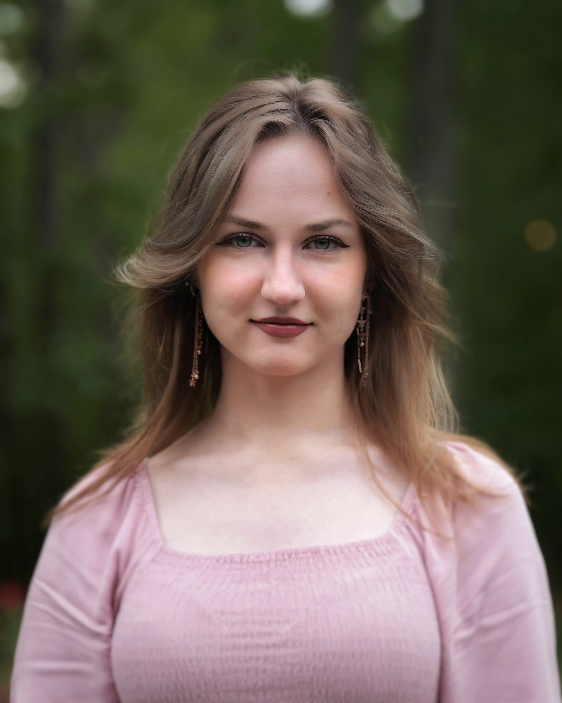
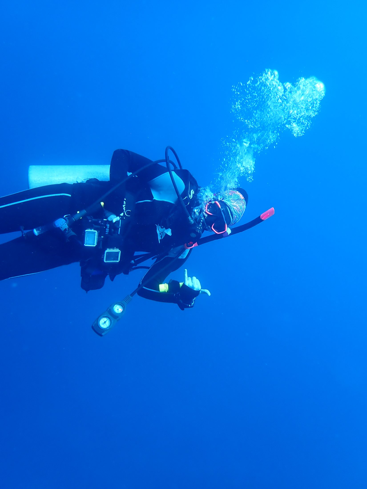
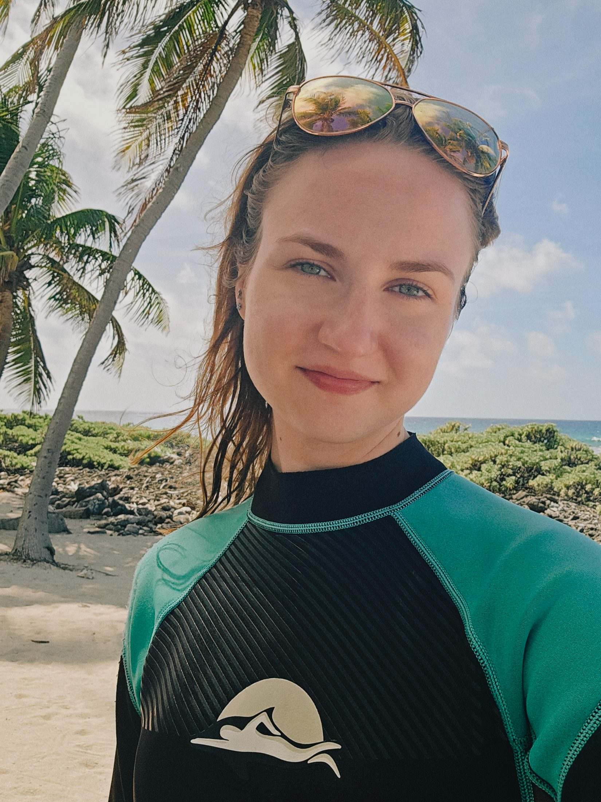
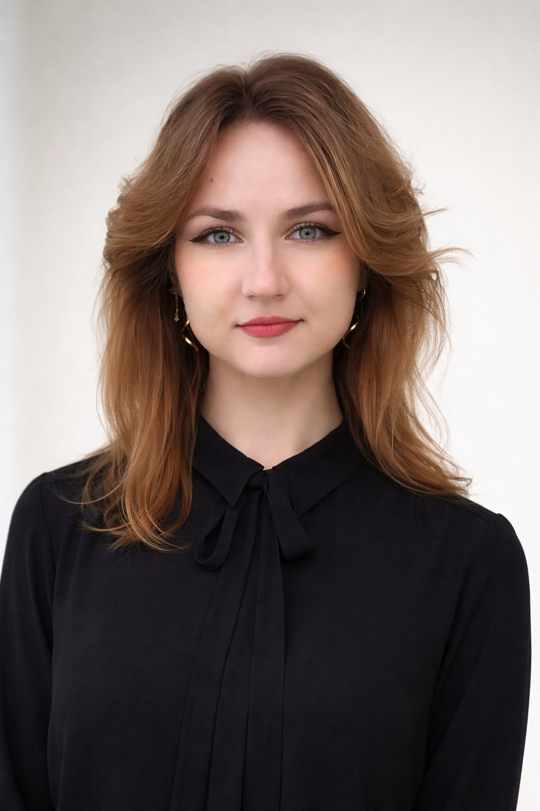
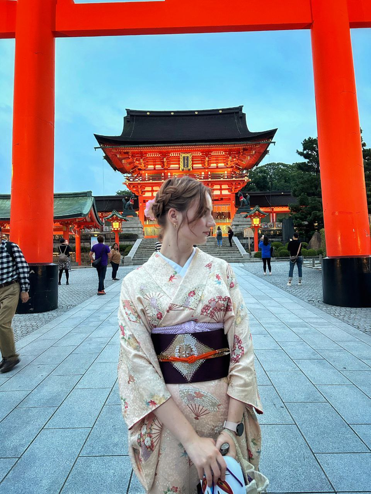

From a port city on the Black Sea to a reef in the Caribbean — by way of engineering benches, language classrooms, and a lot of saltwater. This is the per sea story.

I was born early on a Sunday morning in August 2002, in Saint Petersburg — Russia’s city built on water. But Petersburg was never mine. When I was three we moved south to Novorossiysk, a working port on the Black Sea, and that is the place I call home. Cranes, cargo ships, the grey shimmer of distant water; in summer, the pebble beaches of the Sudzhuk spit. The sea was always there, on the edge of everything — until you realize you’ve been orienting yourself around it the whole time.
I was the kind of student whose photo ends up on the honor board. I tested into the city’s most competitive school and got sent to olympiads in whatever subject they thought I’d place in. On the side I trained as a flautist — eight years of conservatory in seven — and sewed things that ended up in city exhibitions. My hands have never learned how to sit still.
My family is Protestant, which in Russia is its own quiet negotiation with the world — and which turned urgent in October 2017, when an agency told us our flight was in two weeks. We folded our lives into one suitcase each. At fifteen, I set foot on American soil for the first time: Charlotte, North Carolina, as religious refugees through the Lautenberg program.
My English was the kind years of Russian schooling produce — it resembles the language without quite doing anything. They put me in ESL; by spring I’d tested into honors. It was not smooth: I translated nearly every worksheet word by word, walked home across a bridge over two highways, and showed up to class every single day — even the ones my anxious, often-sick body tried to talk me out of. I have always been stubborn in the most useful way.
Over three years I changed high schools three times and woke at four for a 5 a.m. bus. At Butler I finally loved it — AP sciences, symphonic band, a flute solo set for graduation — and then COVID took the spring. We’d just bought a house I described, walking in, as “what sin would look like if it had a physical form.” We couldn’t afford to fix it, so we became the people who fixed it — five months without a kitchen, an online class in my ear while I painted the window frames.
I came to Wake Forest in 2021 to be a biomedical engineer — the straight line out of “you’re smart, you should be a doctor.” It lasted exactly one semester of biomechanics. That same year I started teaching myself Japanese; it stuck where other languages hadn’t, became a minor, then a semester in Tokyo, then a second major I stayed an extra year to finish. (Somewhere in there I became a U.S. citizen, and my family became Axonov.)
The turn I didn’t see coming happened underwater. On a trip to Okinawa in 2024 I snorkeled my first coral reef and gasped so hard I nearly choked — I’d studied reefs for years, and none of it was the actual thing. I got certified, dove Okinawa, Jeju, and Belize, and somewhere on a cold boat realized I’d do it all again in a heartbeat. That was when it stopped being a detour and became the path.
So here I am: an engineer who fell for the ocean, a writer in two languages studying a third and a fourth, a marine ecologist in the making with a fantasy series waiting in the margins. I’m writing this from Tbilisi, where the Black Sea in Batumi stopped me in my tracks after nine years away. I graduate in December 2026, ship out for Antarctica the same month, and I’m aiming — eventually, stubbornly — at a PhD in behavioral marine ecology. It was the long way to the sea.
Born in Russia’s city on the water — though it was never really mine.
At three, home becomes a working Black Sea port — the place I actually call home, the water always on the edge of everything.
Refugee to North Carolina at fifteen, one suitcase each. Placed in ESL; tested into honors a semester later.
A 5 a.m. bus, AP sciences and symphonic band, a pandemic, and a falling-apart house rebuilt by hand.
Arrived set on biomedical engineering — the straight line from “you should be a doctor.” It lasted one semester of biomechanics.
First lab research — and teaching myself Japanese on the side, which stuck where other languages hadn’t.
A semester abroad; the Japanese minor grows into a second major worth staying an extra year for.
U.S. citizenship and the family name — and a first coral reef in Okinawa that quietly changed the plan.
Scuba certified; oceanography at Bigelow Lab on the Gulf of Maine; reef expeditions in Belize and off Okinawa & Jeju.
A summer session in Tbilisi, graduation in December, then Antarctica the same month.
A PhD in behavioral marine ecology. Still being written.
I crochet — including, yes, a cuttlefish. It started early: as a kid I sewed pieces for city exhibitions, and my hands have needed something to do ever since.
Classically trained, with honors. Music was my first discipline and it never quite left.
Russian and English by birth, Japanese by devotion, with Arabic and Ukrainian in the mix. I think about how languages carry worlds.
I write — poems, stories, songs — in more than one language. Read the writing →
35+ logged dives, Advanced Open Water — certified in underwater photography, navigation, and night diving. The reef is my favorite office.
Reef-search. Squid pro quo. Wrasse to the occasion. I regret nothing.




"From a port on the Black Sea to a reef in the Caribbean — per sea, the whole way."